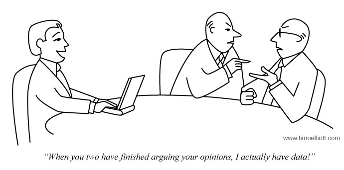

✏️
Overview
We will discuss different types of data, how they are represented in R, and how data type influences the types of data analyses we may employ.
Pre-lecture materials
Watch
Watch
Before class, you can prepare by watching:
Acknowledgements
Material for this lecture was borrowed and adopted from
- https://andreashandel.github.io/MADAcourse/Data_Types.html
- https://r-coder.com/data-types-r/#Raw_data_type_in_R
- https://www.stat.auckland.ac.nz/~paul/ItDT/HTML/node76.html # Learning objectives
Learning objectives
At the end of this lesson you will:
- Understand different types of data and how they are represented computationally
- Understand that different data types require different analysis approaches
- Recognize different base data types in R and know how to work with them
- Know about the base data structures in R and how to make them do what you want
What is data anyway?
Merriam Webster defines data as factual information (such as measurements or statistics) used as a basis for reasoning, discussion, or calculation.
From a practicing scientistsʻ point of view, data is anything measureable or scorable that could provide information regarding a phenomenon of interest.
Ideally, data:
- are repeatable (at least within statistical error).
- contain more signal than noise.
For example, if we are studying how morphology changes with body size, we could take measurements such as body length, head length, arm length, and leg length on a sample of individuals. These measurements would provide linear, continuous data that would inform our study of size and scaling. If we also expected males and females to differ, then sex would be a categorical variable.
- It is important to define the variables so that the measurements are repeatable by other scientists collecting data on the same or similar samples.
- The variables chosen are expected to be related to the phenomenon of interest (here, scaling).
- The individuals are replicates from the same sample population, meaning that they should be equally embody or be influenced by the phenomenon we are studying. In other words, they form a homogenous sample. In the example of sexual dimorphism, we potentially have different groups within our sample. This can be taken account of in analyses using our categorical grouping variable sex.
Data have many forms such as images, sound, video, text, or any combination. Today we also have access to large volume datastreams from remote sensing, social media, or from all the various -omics. The kind of data, and how messy it is, determines the amount of processing that needs to be done before analysis.
At some point your data will most likely be arranged into spreadsheets, with observations as rows and variables as columns. In this course, we will focus on the data source that you are most likely to encounter in your analyses, the “(messy) spreadsheet” type, containing bits of information collected on individuals. Please do feel free to play around with other data types on your own, e.g. for your course project.
Types of Variables
Variables are the conceptual elements of the data. Variables are typically categorized by the nature of how they can vary (i.e., quantitative, qualitative, ordinal), because these differences dictate different analytical approaches and statistical methods.
Quantitative: This data type, also called metric data, represents variation in magnitude and generally allows one to do certain mathematical operations, e.g., subtraction or addition. The most common variations include:
- Continuous: Can take on any numerical value. Examples include mass, length, distance, age, etc.
- Discrete: Can only take countable (integer) values, e.g., the number of offspring an indivdiual produces.
- Fraction/Proportion: A continuous ratio of two values, with the numerator being a part to the whole which is represented by the demoninator. Thus these variables take on values between 0 and 1.
- Ratios: A continuous ratio of any two values. Data measured on a ratio scale have all the properties of continuous data.
Qualitative: Generally speaking, qualitative data indicate categories which have no intrinsic numeric value or natural order. Therefore it would not make sense to apply arithmetic to qualitative data such as color, sex, or family group, etc. You may see the term nominal (definition: “pertaining to names”) data applied to categorial data in the statistical literature. Major types of qualitative data include:
- Categorical: e.g., flower color, continent of origin, social status, disease state, etc.
- Descriptive: e.g., free text data from field observations.
Ordinal: Related to categorical data, this type differs in that they can be ranked, at least qualitatively.
For example, while body condition may be a qualitative assessment, “obese” clearly indicates greater fat stores than “well-conditioned”, which is greater than “emaciated”. Thus, ordinal data fall between being strictly quantitative or strictly qualitative. In some cases, if there are numerous categories, you can begin to think of them as approaching continuous data, although one important difference is that there is no clear numerical value that you can assign to the different categories (i.e., it is unclear whether the difference between obese and well-conditioned is the same as the difference between well-conditioned and emaciated). It may make sense to apply rank order statistics to ordinal data, but it would not make sense to add, subtract, or multiply these categories.
Analysis approaches and their relationship to data
It may be obvious that data type will dictate the types of analyses one can do. It might be less obvious that the question of interest and whether there is a quantitative or ordinal outcome also drive our analyitical approach.
When we want to know the strength of the quantitative relationship
Methods for quantitative responses (or outcomes) that address questions such as “how much does leg length increase with body size?”? In other words, “how much does variable Y change with each increment of change in variable X?” These are usually referred to as regression approaches.
There are many subtypes of regression such as linear regression for continuous outcomes, and Poisson regression for discrete outcomes.
- Linear regression predicts a continuous response, such as body size.
- Poisson regression predicts a count or discrete response, such as population size.
Both types of regression can be based independent variables that are continuous, discrete, or categorical (or some combination). They differ in the underlying distribution of the modeled response variable, often a normal distribution for linear regression, and a Poisson distribution for the Poisson regression.
When we want to know about grouping
Methods that recover categorical responses, in other words, categorizing observations based on the analysis of data, are usually referred to as classification approaches. These methods are useful for looking for order in nature, such as whether different species can be grouped into “ecomorphs” based on their morphology, or to predict the type of behavioral response (e.g., “attack” or “flee”) based on responses to different stimuli.
It is possible to obtain an ordinal response as well, using ordinal regression. Alternatively, the the response can be treated as unordered categorical or as continuous (depending on how you code them, i.e., in R as a factor or numeric).
There are no hard and fast rules regarding when it is appropriate to treat an ordinal variable as fully quantitative. It should, however, at least be explained or justified. You can always treat it as categorical, but then you lose some information on the ranking of the variable.
To add to the confusion, these classification methods are often based on regression, with the decision to classify based on one category or another dependent on comparing distances or probabilities based on regression results.1
Recently, there has been a lot of interest in AI and machine learning. This is often just a fancy way of renaming discriminant function analysis and cluster analysis. When you see supervised learning in the literature, it refers to cases when we have the categories predefined, and often we have a training dataset with data on individuals of each category to use to train the classification algorithm before we use it to predict grouping (i.e., discriminant function analysis). When we donʻt have the categories a priori, and the algorithms determine the categories and their number, these analysis methods are usually referred to as clustering approaches and are also called unsupervised learning methods.
We will return to and apply some of those methods later in the course.
Data types in R
Now that we have a basic understanding of the conceptual landscape of data, letʻs breifly discuss how these different types of data are represented in and handled by R.
If you would like a gentle video walk through/demonstration of data types, now would be a good time to check out the Types section of the RStudio programming basic primer. For more details and examples see chapter 3 of IDS.
Basic data types
R has six basic (atomic) types of data:
| Atomic Type | Short Description |
|---|---|
| string (or character) | text |
| integer | countable numbers |
| real | real numbers |
| logical | TRUE or FALSE |
| complex | numbers with imaginary component |
| raw | raw bytes |
All other data types are derived from the atomic types
https://r-coder.com/data-types-r/#Raw_data_type_in_R
String/character: Character values are alphanumeric values (plus whitespace, punctuation, etc.). A string is a collection of characters, in other words “text”.
- strings can be pasted together using the
paste()function. - R has powerful tools for string manipulation, including searching, replacing, and customized partial matching (with or without replacement) using wildcards and perl-like regular expressions (or regex) using base functions such as
grep()sub()gsub()substr()
- There are also packages specific for string manipulation including the
stringrpackage which is part of the tidyverse.
It is very likely that you will need to work with strings at some point during a data analysis, even if it is only to find specific values, clean up variable names, etc.
These problems can be quite the headache! But instead of editing them by hand and possibly making an error, it is better to do this with code. It also makes it easier to keep a record of the original data and all of the changes made to it, improving the reproducibility of your analysis.
There is a learning curve to using these tools, especially regex syntax, but they are very powerful and well worth your time.
Good sources for practice manipulating strings:
- For beginners: Review the Strings chapter (14) of R4DS, and do the exercises.
- The string processing chapter (25) of IDS
- the Character Vectors chapter in the STAT 545 book by Jenny Bryan
Decide which one is right for your level and work through some examples. I think youʻll agree that it is worth your time.
Numeric (double or integer): Variables of type numeric in R are either integers or double precision (representing real numbers).
- Integers and real values are different, but in practice most R users donʻt pay attention to this distinction. Integer values tend to be coerced (converted) to real values if any mathematical operations are done to them.
- If an integer is explicity needed, you can create them using functions such as
as.integer(). - Note that when you type an integer value, e.g.
x <- 2, into R, this is considered numeric by default. - If you want to make sure a value is treated as integer, add an
L, e.g.x <- 2L.
Logical: Logical variables are binary and can take on only two values, TRUE or FALSE (which are reserved words that only take on these meanings in R).
- In R, logical values are interpreted as 1 for
TRUEand 0 forFALSE. - R also understands
T,True, andtrueforTRUE, and the corresponding representations forFALSE. - Importantly, logical comparisons are used for indexing. You will use logical comparisons when cleaning and checking your data, or running analyses, e.g., if you want to see if your variable
xis greater than 5, then the R commandx > 5will return either TRUE or FALSE, based on the value ofx. - Note: reserved words are understood as constants and should not be “quoted”.
Derived data types
R also allows derived data types called classes that are built up from atomic data types. There are R base classes as well as new classes that can be defined as needed by programmers (maybe you?).
Factors: Are Rʻs class for categorical variables.
- Factors have names and values.
- For example, a size factor may have
names(orlevels) ofsmall,medium. andlargewith values 0,1,2. Here, the values simply indicate the different categories, with the names being the human-friendly labels for the values.
- Factors can be ordered/ordinal or not.
- Factors could be numeric values, e.g., the number of offspring.
- Or it could be a factor coding for 3 types of habitat (unordered),
- Or 3 levels of life history stage (ordered).
- An excellent package to work with factors is the
forcatspackage.
For more about factors, work through the Factors chapter of R4DS, and do the exercises.
Date/time: Dates in base R are of the class Date (and are called POSIX variables). The lubridate package is a tidyverse package to work with dates, which many people find easier. There are other packages as well.
Additional resources are the Dates and times chapter of R4DS and the Parsing Dates and Times chapter of IDS.
Programmer-defined classes Many packages define their own classes. For example class phylo is used to represent phylogenetic trees in the ape package.
There are several functions that can show you the data type of an R object
such as typeof(), mode(), storage.mode(), class() and str().
Data structures in R
Data in R are stored in data structures called objects.
Vectors: vectors are the simplest object, a collection of data elements in a single sequence.
- One way to create vectors is with the
concatenatecommand,c().
1:3is shorthand for a numeric sequence=c(1,2,3)
x <- c(3,12,5)
y <- 1:3
x[1] 3 12 5y[1] 1 2 3- A single vector can contain only one type (e.g., all characters or all numeric).
- If you try to mix and match, everything will default to the lowest common denominator, typically a character (anything can be a character).
x1 <- c(3, 1, "dog")
class(x)[1] "numeric"class(x1)[1] "character"x1[1] "3" "1" "dog"What happened?
Matrices: A matrix is a rectangular collection of data elements in rows and columns.
- A matrix can contain only one type.
- Internally, R stores matrices as a long vector, keeping track of where the columm breaks are.
- Matrices are really important for the matrix math used to solve many statistical models.
Data frames: A data frame is a rectangular data structure that is designed to store records of individual subjects.
- A data frame has rows and columns.
- Columns are allowed to be of different data types (for example, “character” for the subject names and “numeric” for measured variables for each subject, and “factors” for categories such as sex, etc.).
- Internally, data frames are stored as a list of vectors, one for each column. This allows each column to have a different type.
- Each columm must have the same number of elements or rows, i.e., it must be rectangular.
- Typically, the columms of data frames have names corresponding to variable names.
Lists: Lists do not have to be rectangular and are the most flexible data type in R. A list is a vector possibly composed of different structures and of varying length (this is the only type where that is allowed!). > - Lists are commonly used for model fits in statistical functions. For example, you may want to store the model (an expression), the input data (a dataframe), the output coefficients (a vector), - R has many powerful functions that operate on lists.
Other types of data structures exist; they are often introduced by specific R packages. An important one to know is the tibble which is a type of data frame used in the tidyverse. It is similar, but not exactly like a data frame. You can read more about tibbles on its package website and in R4DS chapter 10.
Other derived data types
Timeseries: A very useful set of tools for times-series analysis in R is the set of packages called the tidyverts. CRAN also has a Task View for Time Series Analysis. (A Task View on CRAN is a site that tries to combine and summarize various R packages for a specific topic). Another task view that deals with longitudinal/time-series data is the Survival Analysis Task View.
Omics: The bioconductor website is your source for (almost) all tools and resources related to omics-type data analyses in R.
Text: Working with and analyzing larger sections of text is different from the simple string manipulation discussed above. These days, analysis of text often goes by the term natural language processing. Such text analysis will continue to increase in importance, given the increasing data streams of that type. If you are interested in doing full analyses of text data, the tidytext R package and the Text mining with R book are great resources. A short introduction to this topic is The text mining chapter (27) of IDS.
Images: Images are generally converted into multiple matrices of values for different pixels of an image. For instance, one could divide an image into a 100x100 grid of pixels, and assign each pixel a RGB values and intensity. That means one would have 4 matrices of numeric values, each of size 100x100. One would then perform operations on those values. We won’t do anything with images here, there are some R packages for analyzing image data.
Videos: Are a time-series of images. Analysis of videos therefore has an extra layer of complexity.
Footnotes
For example, logistic regression (a regression to predict a binary [yes/no] outcome) is used for classification. The underlying model predicts a quantitative outcome (a value between 0 and 1 usually interpreted as a probability), which is then binned to make categorical predictions.↩︎